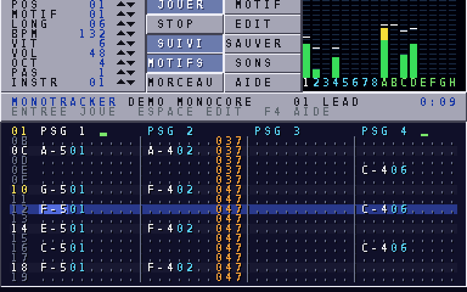
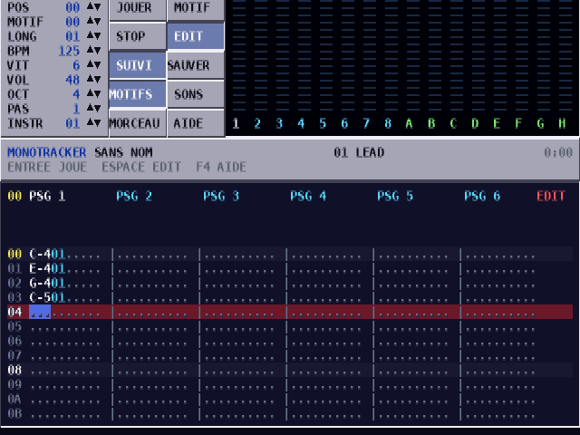
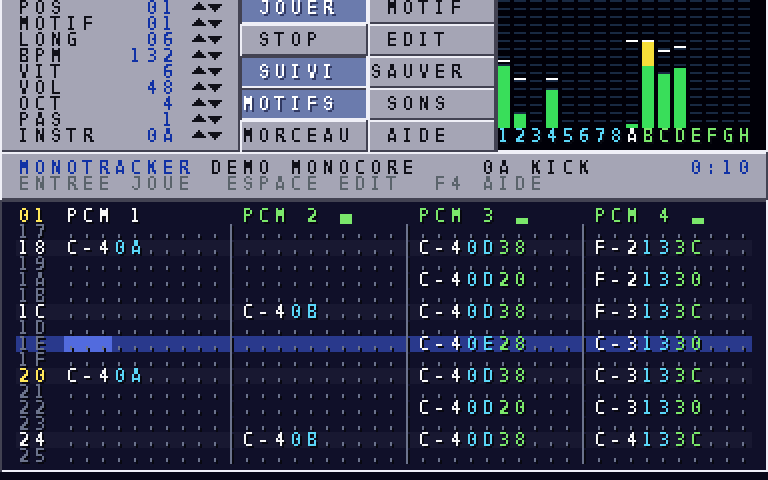
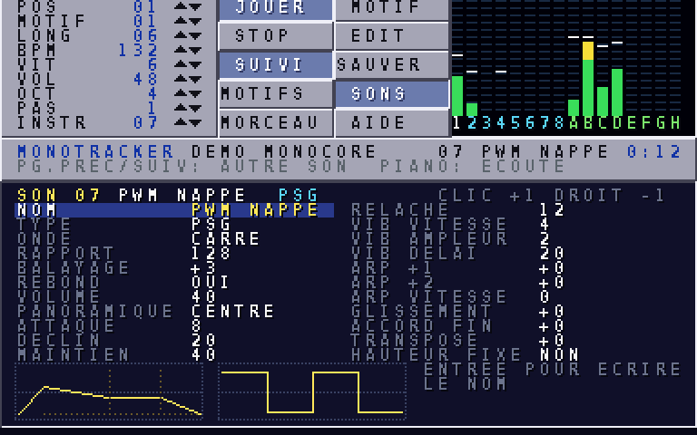
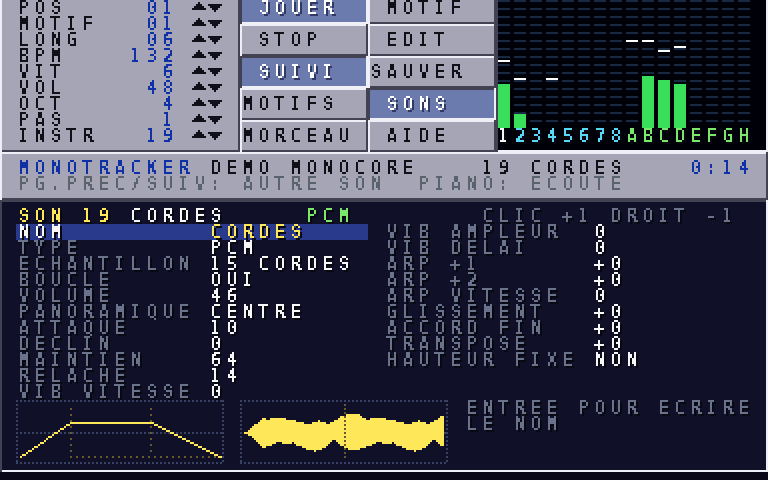
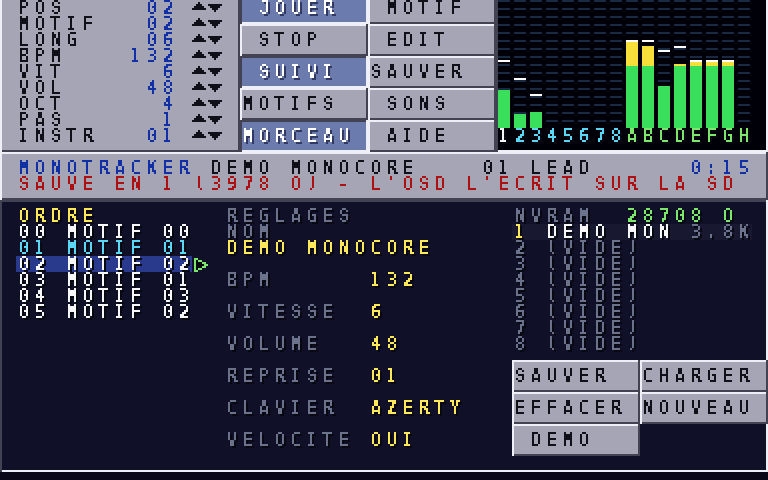

MONOTRACKER est l'atelier de musique de la MONOCORE-1. Comme les trackers de l'Amiga, il découpe un morceau en motifs : des grilles de notes qui défilent de haut en bas, une ligne après l'autre, sur plusieurs pistes jouées en même temps. On y écrit la musique au clavier, comme sur un piano, et on la règle au clavier ou à la souris.
Il pilote les 16 canaux sonores de la console : huit oscillateurs (PSG), qui fabriquent des sons d'arcade à partir d'ondes simples, et huit voix d'échantillons (PCM), qui jouent des sons enregistrés : batterie, basse, cordes, cuivres, chœur… Une page entière sert à fabriquer vos propres sons.
Les morceaux se gardent dans la mémoire sauvegardée de la console et passent dans vos jeux : le lecteur du tracker est une bibliothèque du SDK. Ce que vous entendez dans le tracker est exactement ce que le joueur entendra.
Un tracker lit ses motifs comme une partition qui défile : à chaque ligne, il déclenche les notes écrites sur les 16 pistes. Une ligne dure un certain nombre de ticks (la vitesse), et le nombre de ticks par seconde vient du tempo en BPM. Entre deux lignes, les effets et les enveloppes changent le son tick après tick : c'est ce qui donne vie aux notes.
Comme dans tous les trackers, les numéros d'instrument, les volumes et les effets s'écrivent en hexadécimal : on compte de 0 à 9, puis A, B, C, D, E, F, puis 10. Ainsi 0A vaut 10, 10 vaut 16, 1F vaut 31 et 40 vaut 64. Les touches A à F du clavier servent de chiffres dans ces colonnes.
Ce qu'il sait faire, où le lancer, et ce qu'il lui faut.
MONOTRACKER est une ROM de la MONOCORE-1, comme un jeu. Il s'ouvre sur le morceau de démonstration : appuyez sur Entrée pour l'écouter, et encore sur Entrée pour l'arrêter.
| Élément | Capacités |
|---|---|
| Pistes | 16 : pistes 1 à 8 sur les canaux PSG (oscillateurs), pistes A à H sur les voix PCM (échantillons) |
| Motifs | 24 motifs de 64 lignes ; chaque case porte une note, un instrument, un volume et un effet |
| Morceau | jusqu'à 128 positions, chacune jouant un motif ; une position de reprise pour boucler |
| Sons | 31 instruments, PSG ou PCM, avec enveloppe, vibrato, arpège, glissement et balayage d'onde |
| Échantillons | 21 sons originaux fournis avec le tracker (batterie, basse, piano, cordes, cuivres, chœur…) |
| Tempo | 32 à 255 BPM, 1 à 31 ticks par ligne ; 16 effets jouables à chaque ligne |
| Sauvegarde | 8 emplacements dans la mémoire sauvegardée de 32 Ko, écrite sur la carte SD de la MiSTer |
| Commande | clavier (indispensable), souris, et clavier MIDI USB en option ; disposition AZERTY ou QWERTY au choix |
| Machine | Comment |
|---|---|
| MiSTer | copiez monotracker.mnc dans games/MONOCORE, branchez un clavier USB (et une souris), puis chargez la ROM depuis le menu du core MONOCORE |
| Simulateur | ouvrez dist/monocore.html et choisissez MONOTRACKER dans la liste des ROM intégrées : le clavier et la souris de la console s'activent tout seuls |
| Version du core | le clavier demande le core en version 2, la souris en version 3, le clavier MIDI en version 4 ; avec un core plus ancien, le bandeau l'indique (CORE SANS SOURIS) et tout reste utilisable au clavier |
Quatre notes, une batterie, une sauvegarde : le tour complet en dix minutes.

Appuyez sur Maj Entrée : le motif se joue en boucle à partir du curseur. Échap arrête tout.
Suppr efface la note sous le curseur, Maj Suppr vide toute la case. Inser et Retour arrière insèrent ou retirent une ligne, en décalant le reste de la piste.
Appuyez sur Ctrl S. Le bandeau annonce l'emplacement utilisé. Sur la MiSTer, ouvrez ensuite le menu du core (la touche F12 du MiSTer ou le bouton OSD) : c'est à ce moment que la sauvegarde est écrite sur la carte SD. Au prochain lancement, MONOTRACKER rouvrira ce morceau.
Sur la page du morceau (F3), descendez sur NOM dans le cadre RÉGLAGES (Tab pour changer de cadre), appuyez sur Entrée, tapez le nom, puis Entrée de nouveau. Avec la souris, un clic sur le nom suffit.
Un panneau de commande toujours visible, et la page de travail en dessous.
| Zone | Rôle |
|---|---|
| 1. Compteurs | POS (position jouée ou éditée), MOTIF (motif de cette position), LONG (nombre de positions), BPM, VIT (ticks par ligne), VOL (volume général), OCT (octave du piano), PAS (lignes descendues après une saisie) et INSTR (instrument courant). Les flèches ▲▼ les changent à la souris. |
| 2. Boutons | JOUER le morceau, MOTIF en boucle, STOP, EDIT (mode édition), SUIVI (le curseur suit la lecture), SAUVER, et les quatre pages : MOTIFS, SONS, MORCEAU, AIDE. Un bouton enfoncé est bleu. |
| 3. Vumètres | le niveau des 16 pistes, avec une marque de crête. Sous chaque barre, le nom de la piste : 1 à 8 pour les PSG, A à H pour les PCM ; blanc pour la piste du curseur, rouge si elle est muette. |
| 4. Bandeau | nom du morceau, instrument courant, durée de lecture ; en dessous, les messages en rouge, ou une aide sur ce que vous êtes en train de faire. |
| 5. Page | les motifs (F1), les sons (F2) ou le morceau (F3). L'aide (F4) occupe tout l'écran ; un clic ou F4 la referme. |
La souris déplace une flèche blanche. Un clic gauche augmente ou active, un clic droit diminue ou fait l'inverse, la molette fait défiler ou change une valeur. Maintenu sur une flèche ou une valeur, le clic se répète. L'annexe B donne tous les gestes.
La grille de notes, le piano, et toutes les façons de la remplir.
La page des motifs montre quatre pistes à la fois : PSG 1 à 4, PSG 5 à 8, PCM 1 à 4 ou PCM 5 à 8. Tab passe à la piste suivante (Maj Tab à la précédente) et l'affichage suit. Le numéro du motif est en haut à gauche ; les numéros de ligne sont en hexadécimal, de 00 à 3F, avec un repère tous les quatre temps.
| Colonne | Contenu |
|---|---|
| note | C-4 est le do de la 4e octave, C#4 le do dièse ; les notes vont de C-0 à B-7 ; === est une note coupée |
| instrument | de 01 à 1F, en hexadécimal ; vide, la piste garde son instrument |
| volume | de 00 (muet) à 40 (plein) ; vide, la piste garde son volume |
| effet | une lettre de 0 à F et un paramètre de deux chiffres (chapitre 5) |
Une case vide affiche des points. La couleur de l'instrument est rouge si son type ne correspond pas à la piste (un instrument PCM sur une piste PSG, par exemple) : cette note ne jouera pas.
Dans la colonne des notes, les deux rangées de lettres du clavier forment un piano de deux octaves et demie. La rangée du bas joue l'octave choisie dans le compteur OCT (F5 et F6 pour la changer), celle du haut l'octave au-dessus.
La touche & (celle du 1) écrit une note coupée === : le son de la piste s'éteint selon le relâché de son instrument. Une note suivante sur la même piste remplace la précédente, sans note coupée.
| Touches | Effet |
|---|---|
| Espace | mode édition, ou mode jeu : hors édition, le piano joue sans rien écrire |
| ↑ ↓ ← → | déplace le curseur ; de gauche à droite, il passe par la note, les deux chiffres de l'instrument, ceux du volume, la lettre et les deux chiffres de l'effet |
| Pg.préc Pg.suiv Origine Fin | 16 lignes plus haut ou plus bas, première ou dernière ligne |
| 0…9 A…F | chiffres de l'instrument, du volume et de l'effet : le curseur avance dans la colonne, puis descend du pas |
| F7 F8 | pas d'avancement : 0 (le curseur ne bouge pas) à 16 lignes |
| F11 F12 | instrument courant (ou pavé − pavé +) : il y en a un pour les pistes PSG et un pour les pistes PCM |
| Suppr | efface la colonne sous le curseur (la note efface aussi l'instrument) ; Maj Suppr vide la case |
| Inser Retour arrière | insère une ligne vide, ou retire la ligne du curseur, sur la piste |
Sur la MiSTer, la touche F12 ouvre le menu du MiSTer et n'arrive pas au tracker. Pour passer à l'instrument suivant, utilisez pavé + ou le compteur INSTR à la souris.
Taper un numéro d'instrument dans une case choisit aussi cet instrument pour les notes suivantes. Une note tapée au piano reçoit toujours l'instrument courant du type de la piste.
Entrée joue le morceau à partir de la position courante, Maj Entrée joue le motif en boucle à partir du curseur ; Entrée de nouveau ou Échap arrête. Avec le suivi (bouton SUIVI ou Ctrl F), le curseur suit la ligne jouée : on peut écrire en écoutant. Sans suivi, une bande bleu clair montre la ligne jouée.
| Touches | Effet |
|---|---|
| Ctrl M | rend la piste du curseur muette, ou la rétablit |
| Ctrl O | solo : seule la piste du curseur reste audible ; une seconde fois, toutes reviennent |
| Ctrl C Ctrl X Ctrl V | copie, coupe ou colle la piste entière du motif |
| Alt C Alt X Alt V | copie, coupe ou colle le motif entier (ses 16 pistes) |
| Ctrl ↑ Ctrl ↓ | position précédente ou suivante du morceau |
| Ctrl ← Ctrl → | change le motif joué à la position courante |

Une lettre, deux chiffres : arpèges, glissés, vibratos et changements de tempo.
La dernière colonne d'une case porte un effet : une lettre de 0 à F, puis un paramètre de deux chiffres hexadécimaux, souvent noté xx, ou x et y pour ses deux chiffres. L'effet ne vaut que pour sa ligne : pour qu'un vibrato dure, répétez-le à chaque ligne. Quand le curseur est sur un effet, le bandeau rappelle ce qu'il fait.
| Effet | Nom | Action | Exemple |
|---|---|---|---|
0xy | Arpège | à chaque tick, la note, puis +x demi-tons, puis +y | 037 : accord mineur |
1xx | Montée | monte de xx/16 de demi-ton par tick | 104 : glissé vers le haut |
2xx | Descente | descend de xx/16 de demi-ton par tick | 210 : chute d'un demi-ton par tick |
3xx | Portamento | glisse vers la note de la case sans la redéclencher, à xx/16 de demi-ton par tick | 308 avec une note |
4xy | Vibrato | vitesse x, ampleur y/16 de demi-ton ; 0 garde la valeur précédente | 464 |
8xx | Panoramique | 00 à gauche, 80 au centre, FF à droite | 8C0 |
9xx | Rapport / début | PSG : rapport cyclique du carré ; PCM : la note démarre à l'échantillon xx × 256 | 940 : carré fin |
Axy | Glissé de volume | +x et −y de volume par tick | A02 : fondu |
Bxx | Saut | passe à la position xx du morceau à la fin de la ligne | B00 |
Cxx | Volume | volume de la piste, 00 à 40 | C20 : moitié |
Dxx | Fin de motif | passe au motif suivant, à sa ligne xx | D00 : motif de 32 lignes |
E1x E2x | Réglage fin | monte ou descend de x/16 de demi-ton, une seule fois | E12 |
E9x | Redéclenchement | rejoue la note tous les x ticks | E93 : roulement |
ECx | Coupure | coupe la note au tick x | EC2 : note très courte |
EDx | Retard | retarde la note de x ticks | ED3 : contretemps |
Fxx | Vitesse / tempo | 01 à 1F : ticks par ligne ; 20 à FF : BPM | F04, F8C |
Les effets 5, 6 et 7 sont libres pour l'instant : la console les ignore.
Avec 037 (mineur) ou 047 (majeur) répété sur chaque ligne, une seule piste PSG joue un accord qui scintille, le son des musiques d'arcade et de démo. La piste ARPEGE de la démo est écrite ainsi.
Oscillateurs et échantillons, enveloppes, vibratos : la page des sons.
La page des sons (F2) règle l'instrument choisi dans le compteur INSTR, avec Pg.préc et Pg.suiv, ou avec F11 et F12. Elle s'ouvre sur l'instrument courant de la piste du curseur. Le piano y reste actif et joue l'instrument affiché, à plusieurs voix : on entend chaque réglage aussitôt.

| Type | Comment le son est fait | Pistes |
|---|---|---|
| PSG | un oscillateur fabrique une onde simple : carré (au rapport cyclique réglable), triangle, dent de scie ou bruit. Sons nets d'arcade, basses, percussions synthétiques. | 1 à 8 |
| PCM | un échantillon enregistré est rejoué à la hauteur de la note. Batterie, instruments acoustiques, chœurs. | A à H |
↑ ↓ choisissent un réglage, ← → le changent (Maj : par 10). À la souris, un clic sur une valeur ajoute 1, un clic droit retire 1, la molette fait varier. Le nom s'écrit après Entrée sur NOM.
| Réglage | Rôle |
|---|---|
| NOM | dix caractères au plus |
| TYPE | PSG ou PCM (Entrée pour changer) |
| ONDE / ÉCHANTILLON | PSG : carré, triangle, dent de scie ou bruit ; PCM : un des 21 échantillons de la banque |
| RAPPORT / BOUCLE | PSG : rapport cyclique du carré, de 1 à 255 (128 = carré parfait, plus petit = son plus fin) ; PCM : la boucle de l'échantillon, s'il en a une |
| BALAYAGE, REBOND | PSG : ajoute cette valeur au rapport cyclique à chaque tick (effet PWM) ; avec le rebond, il repart dans l'autre sens aux bornes |
| VOLUME | volume de l'instrument, 0 à 64 |
| PANORAMIQUE | position dans la stéréo, du centre vers la gauche ou la droite |
| ATTAQUE, DÉCLIN, MAINTIEN, RELÂCHE | l'enveloppe du volume (voir la figure ci-dessous) |
| VIB VITESSE, VIB AMPLEUR, VIB DÉLAI | vibrato automatique : vitesse, ampleur en 1/16 de demi-ton, et ticks d'attente avant qu'il commence |
| ARP +1, ARP +2, ARP VITESSE | arpège automatique : deux notes ajoutées, en demi-tons, et ticks par note (0 = sans arpège) |
| GLISSEMENT | la hauteur glisse de cette valeur, en 1/16 de demi-ton, à chaque tick : négatif pour une grosse caisse |
| ACCORD FIN | décale la hauteur de 1/64 de demi-ton par pas |
| TRANSPOSE | demi-tons ajoutés à chaque note |
| HAUTEUR FIXE | l'instrument joue toujours la même note (do 4, plus la transposition), quelle que soit la note écrite : pratique pour la batterie |
Avec un maintien à 0, le son s'éteint seul à la fin du déclin : c'est un son percussif, une note pincée. Avec un maintien élevé, la note tient jusqu'à la note suivante ou à une note coupée ===, puis s'éteint pendant le relâché. Le volume final d'une note est le produit de l'enveloppe, du volume de l'instrument, du volume de la case et du volume général.

Les 21 échantillons sont des sons originaux, synthétisés pour la MONOCORE-1. Les sons tenus ont une boucle sans raccord audible : ils durent aussi longtemps que l'enveloppe le demande.
| N° | Nom | Genre | N° | Nom | Genre |
|---|---|---|---|---|---|
| 00 | KICK | grosse caisse | 11 | MARIMBA | marimba, frappé |
| 01 | SNARE | caisse claire | 12 | CLOCHE | cloche, résonnante |
| 02 | CLAP | claquement de mains | 13 | GUITARE | corde pincée |
| 03 | HH FERME | charleston fermé | 14 | CUIVRES | cuivres, en boucle |
| 04 | HH OUVERT | charleston ouvert | 15 | CORDES | ensemble de cordes, en boucle |
| 05 | CRASH | cymbale | 16 | ORGUE | orgue, en boucle |
| 06 | TOM | tom | 17 | CHOEUR | chœur « aah », en boucle |
| 07 | RIM | bord de caisse | 18 | FLUTE | flûte, en boucle |
| 08 | COWBELL | cloche de vache | 19 | NAPPE | nappe de synthé, en boucle |
| 09 | BASSE | basse de synthé, en boucle | 20 | ORCH HIT | coup d'orchestre |
| 10 | PIANO EL | piano électrique |
| Son | Réglages |
|---|---|
| Grosse caisse PSG | triangle, déclin 6, maintien 0, glissement −60, hauteur fixe, transposition −12 |
| Caisse claire PSG | bruit, déclin 7, maintien 0, hauteur fixe, transposition +20 |
| Charleston PSG | bruit, déclin 2, maintien 0, hauteur fixe, transposition +36, volume 34 |
| Lead d'arcade | carré au rapport 64, attaque 1, déclin 12, maintien 40, relâché 6, vibrato 6/3 après 14 ticks |
| Nappe PWM | carré, balayage +3 avec rebond, attaque 8, déclin 20, maintien 40, relâché 12 |
| Accord arpégé | carré, ARP +1 = 4, ARP +2 = 7, vitesse 1 : un accord majeur sur chaque note |
| Basse pincée | triangle, déclin 10, maintien 48, relâché 3 ; ou l'échantillon BASSE en PCM |
Ces recettes, sauf l'accord arpégé, sont celles des instruments 01 à 09 du morceau de démonstration, que reprend chaque nouveau morceau. Les instruments 0A à 1E sont les échantillons de la banque, prêts à jouer.
| Touches | Effet |
|---|---|
| Ctrl C Ctrl V | copie l'instrument, colle sur l'instrument affiché |
| Ctrl X | copie l'instrument et le vide |
L'ordre des motifs, le tempo, le nom et la boucle.

Un morceau est une liste de positions. Chacune joue un motif ; le même motif peut revenir plusieurs fois, comme un refrain. La page du morceau (F3) a trois cadres, que Tab parcourt : ORDRE, RÉGLAGES et NVRAM.
| Touches | Effet |
|---|---|
| ↑ ↓ Pg.préc Pg.suiv | choisit une position |
| ← → | change le motif de la position (Maj : par 10) |
| Inser | ajoute une position après celle-ci, avec le même motif |
| Suppr | retire la position |
| Entrée | ouvre ce motif sur la page des motifs |
La position de reprise est écrite en bleu ciel : après la dernière position, la lecture repart d'elle. Une introduction jouée une seule fois se met donc avant la reprise.
| Réglage | Rôle |
|---|---|
| NOM | seize caractères au plus |
| BPM | le tempo, de 32 à 255 : à 125 BPM, la console joue 50 ticks par seconde |
| VITESSE | les ticks par ligne, de 1 à 31 ; à 6, une ligne dure une double croche et quatre lignes un temps |
| VOLUME | le volume général, de 0 à 64 |
| VELOCITE | OUI : avec un clavier MIDI, la force de frappe s'écrit dans la colonne du volume (chapitre 9) |
| REPRISE | la position rejouée après la dernière |
| CLAVIER | AZERTY ou QWERTY : la disposition utilisée pour les lettres (noms, chiffres A à F, raccourcis). Le piano, lui, dépend de la position des touches et ne change pas. |
Un son tenu (nappe, cordes, orgue, lead) continue tant que sa piste ne reçoit ni nouvelle note ni note coupée, même d'un motif à l'autre. Si la section suivante ne joue rien sur cette piste, l'accord précédent reste par-dessus ses nouveaux accords et ça frotte. Mettez une note coupée === à la ligne 00 du motif suivant, sur chaque piste concernée. Sur PC, sav2song.py monotracker.sav 1 --tenues liste ces notes qui débordent.
Une ligne dure vitesse × 2,5 / BPM secondes. À 132 BPM et vitesse 6, comme la démo : 6 × 2,5 / 132 = 0,114 s par ligne, soit 132 temps par minute si un temps fait quatre lignes. Les effets Fxx changent la vitesse et le BPM pendant le morceau.
La NVRAM, la carte SD de la MiSTer, et les allers-retours avec le simulateur.
Les morceaux se rangent dans la NVRAM, la mémoire sauvegardée de 32 Ko, en huit emplacements ; un morceau occupe de un à six Ko et l'espace libre s'affiche en vert.
| Raccourci | Bouton | Effet |
|---|---|---|
| Ctrl S | SAUVER | sauve dans l'emplacement choisi ; ailleurs que sur la page du morceau, dans l'emplacement du morceau, ou le premier libre |
| Ctrl L | CHARGER | charge l'emplacement choisi (aussi Entrée dans le cadre NVRAM) |
| Ctrl D | EFFACER | vide l'emplacement choisi |
| Ctrl E | NOUVEAU | commence un morceau vide, avec les instruments de la démo |
| Ctrl R | DEMO | recharge le morceau de démonstration |
Ce qui ferait perdre quelque chose (charger par-dessus des modifications, effacer, remplacer) demande de refaire le même geste une seconde fois ; le bouton reste enfoncé en attendant.
La sauvegarde est le fichier saves/MONOCORE/monotracker.sav de la carte SD. Après Ctrl S, ouvrez le menu du core : il écrit alors la NVRAM sur la carte. Au démarrage, MONOTRACKER rouvre le dernier emplacement chargé ou sauvé.
La NVRAM du simulateur est gardée par le navigateur. Les raccourcis que le navigateur garde pour lui (Ctrl N, Ctrl T, Ctrl W) ne parviennent jamais au tracker : c'est pourquoi le nouveau morceau est sur Ctrl E. Sous l'écran, trois boutons font le pont avec la MiSTer et les jeux :
| Bouton | Effet |
|---|---|
| Exporter .sav | télécharge la NVRAM sous le nom monotracker.sav, à copier dans saves/MONOCORE de la carte SD |
| Importer .sav… | charge un .sav de la MiSTer et redémarre la ROM : on reprend le travail là où on l'avait laissé |
| Morceaux .mts | liste les morceaux sauvés ; un clic télécharge le fichier .mts d'un morceau, prêt pour un jeu |
Jouer et écrire sur un vrai clavier, régler les sons aux potentiomètres.
Un clavier MIDI USB, comme un Novation Launchkey, remplace avantageusement le piano des touches de lettres : il a de vraies touches, toute l'étendue des octaves, la force de frappe et des potentiomètres. MONOTRACKER le prend dès qu'il reçoit une première note ; le bandeau affiche alors CLAVIER MIDI BRANCHÉ.
| Machine | Comment |
|---|---|
| MiSTer | branchez le clavier sur un port USB de la MiSTer. Dans le menu du core MONOCORE (F12), réglez le mode UART sur MIDI, connexion USB : MidiLink, le service MIDI de la MiSTer, transmet alors le clavier au core. Il faut le core en version 4. |
| Simulateur | branchez le clavier sur le PC et cochez clavier MIDI sous l'écran, dans l'encadré « Système et manettes ». Le navigateur demande l'autorisation la première fois ; le nom du clavier s'affiche à côté de la case. Chrome et Edge le permettent ; Firefox seulement si la page vient d'un serveur (encadré ci-dessous) ; Safari non. La case reste cochée d'une visite à l'autre. |
Firefox ne donne pas le MIDI à une page ouverte directement depuis un fichier. Lancez plutôt le simulateur par simulateur.bat (Windows, double-clic) ou simulateur.py, rangés à côté de monocore.html dans dist/ : ils servent la page en local et l'ouvrent dans votre navigateur. Firefox demande alors l'autorisation, et le clavier MIDI fonctionne. Il faut Python, déjà nécessaire pour construire les ROM.
| Page | Ce que font les touches du clavier MIDI |
|---|---|
| Motifs | jouent la note sur la piste du curseur, avec l'instrument courant ; en mode édition, l'écrivent et descendent du pas, comme le piano des lettres. La force de frappe donne le volume de la case. |
| Sons | jouent l'instrument affiché, à plusieurs voix : on essaie un son en jouant des accords. |
| Morceau | jouent la note sur la piste du curseur, pour essayer une mélodie. |
Le do du milieu du clavier MIDI (note 60) est le C-4 du tracker ; toutes les octaves de C-0 à B-7 sont accessibles, sans passer par le compteur OCT. Le réglage VELOCITE de la page du morceau décide si la force de frappe s'écrit dans la colonne du volume : à NON, les notes s'écrivent sans volume, et la piste garde le sien.
Sur la page des sons, les huit potentiomètres du clavier règlent huit réglages de l'instrument affiché, que l'on entend changer en jouant. Le bandeau indique chaque fois le réglage et sa nouvelle valeur.
| Bouton | CC | Réglage | Étendue |
|---|---|---|---|
| 1 | CC 21 | ATTAQUE | 0 à 64 ticks |
| 2 | CC 22 | DÉCLIN | 0 à 64 ticks |
| 3 | CC 23 | MAINTIEN | 0 à 64 |
| 4 | CC 24 | RELÂCHE | 0 à 64 ticks |
| 5 | CC 25 | VOLUME | 0 à 64 |
| 6 | CC 26 | VIB VITESSE | 0 à 32 |
| 7 | CC 27 | VIB AMPLEUR | 0 à 32 |
| 8 | CC 28 | RAPPORT (PSG) ou PANORAMIQUE (PCM) | 1 à 255, ou de gauche à droite |
Le branchement pas à pas et les vérifications en cas de problème sont dans le guide manual/MONOCORE-1_Guide_MIDI.pdf.
MONOTRACKER attend les contrôleurs 21 à 28, ceux que les claviers Launchkey envoient d'origine. Si votre clavier en envoie d'autres, réglez-le pour que ses potentiomètres envoient ces numéros ; l'outil de configuration du fabricant le permet en général.
Le lecteur de MONOTRACKER est une bibliothèque du SDK mc.
Un jeu écrit avec le SDK bas niveau mc joue les morceaux du tracker avec le module mtrack. Il lui faut deux fichiers : la banque d'échantillons mtbank.bin, fournie avec le tracker, et le morceau .mts, exporté depuis le simulateur ou depuis le .sav.
python3 tools/mtrack/sav2song.py monotracker.sav # liste les 8 emplacements python3 tools/mtrack/sav2song.py monotracker.sav 1 -o theme.mts # emplacement 1 -> theme.mts
1name = monjeu 2library = mc 3modules = mtrack 4sources = main.c 5data = ../tracker/mtbank.bin theme.mts
Le programme prépare le lecteur avec la banque, lance le morceau, et peut jouer des bruitages avec les instruments du morceau. Voici l'exemple complet examples/test_mtrack :
1// The mtrack module as a game uses it: the demo song of MONOTRACKER plays, button 1 plays a 2// sound effect on PSG channel 8 (reserved: the song leaves it alone), button 2 a PCM effect on 3// voice 8 (shared: the song gets it back when the effect is over), START pauses. 4// Instrument numbers are those of the song (here: 09 BIP, 1E ORCH HIT). 5#include <stdio.h> 6#include "mc.h" 7#include "mtrack.h" 8 9int main(void) { 10 mc_init(); 11 mc_video_mode(320, 240); 12 mc_text_layer(0, 3); 13 mt_init(mtbank_file); 14 mt_reserve(MT_PSG(7), true); 15 mt_play(demo_file, 0); 16 bool paused = false; 17 char line[48]; 18 for (;;) { 19 mc_frame(); 20 uint32_t p = mc_pad_pressed(1); 21 if (p & IN_B(1)) mt_sfx(MT_PSG(7), 73 + (mc_rand() % 12), 9, 64); 22 if (p & IN_B(2)) mt_sfx(MT_PCM(7), 37, 30, 64); 23 if (p & IN_START) { paused = !paused; mt_pause(paused); } 24 mc_text_clear(0); 25 mc_text(0, 2, 2, "TEST DU MODULE MTRACK", 0); 26 snprintf(line, sizeof line, "%s", mt_song_name(demo_file)); 27 mc_text(0, 2, 4, line, 0); 28 snprintf(line, sizeof line, "POSITION %02d LIGNE %02d %s", mt_order(), mt_row(), paused ? "PAUSE" : ""); 29 mc_text(0, 2, 6, line, 0); 30 for (int t = 0; t < MT_TRACKS; t++) { 31 int n = mt_level(t) / 16; 32 int k = snprintf(line, sizeof line, "%s%d ", t < 8 ? "PSG" : "PCM", (t & 7) + 1); 33 for (int i = 0; i < 16; i++) line[k++] = i < n ? '#' : '.'; 34 line[k] = 0; 35 mc_text(0, 2, 8 + t, line, 0); 36 } 37 mc_text(0, 2, 26, "B1 BRUITAGE PSG B2 PCM START PAUSE", 0); 38 } 39}
| Fonction | Rôle |
|---|---|
mt_init(mtbank_file) | prépare le lecteur et ses 16 pistes, une fois |
mt_play(morceau, position) | joue un morceau ; le lecteur tourne tout seul, sur un timer |
mt_stop() / mt_pause(oui) | arrête ou met en pause |
mt_sfx(piste, note, instrument, volume) | joue un bruitage avec un instrument du morceau ; le morceau reprend la piste ensuite |
mt_reserve(piste, oui) | laisse une piste aux seuls bruitages |
mt_order() / mt_row() | position et ligne jouées, pour caler le jeu sur la musique |
mt_level(piste) | niveau d'une piste, pour faire danser l'écran au rythme |
La référence complète, avec le format des fichiers, est dans sdk/MTRACK.md.
Le clavier de MONOTRACKER, page par page.
| Touches | Effet |
|---|---|
| F1 F2 F3 F4 | motifs, sons, morceau, aide |
| Entrée / Maj Entrée | joue le morceau / le motif en boucle, ou arrête |
| Échap | arrête tout |
| F5 F6 | octave −/+ |
| F7 F8 | pas −/+ |
| F11 F12, pavé − pavé + | instrument courant −/+ (sur la MiSTer, F12 ouvre son menu : prenez pavé +) |
| Ctrl S | sauve dans la NVRAM |
| Touches | Effet |
|---|---|
| Espace | mode édition |
| piano | deux rangées de lettres (figure du chapitre 4) ; & : note coupée |
| 0-9 A-F | instrument, volume, effet |
| Suppr / Maj Suppr | efface la colonne / la case |
| Inser / Retour arrière | insère / retire une ligne |
| Tab / Maj Tab | piste suivante / précédente |
| flèches, Pg.préc Pg.suiv Origine Fin | déplacements |
| Ctrl ↑ Ctrl ↓ | position −/+ |
| Ctrl ← Ctrl → | motif de la position −/+ |
| Ctrl C Ctrl X Ctrl V | piste : copier, couper, coller |
| Alt C Alt X Alt V | motif : copier, couper, coller |
| Ctrl M / Ctrl O / Ctrl F | muet / solo / suivi de la lecture |
| Touches | Effet |
|---|---|
| ↑ ↓ | réglage |
| ← →, avec Maj | valeur −/+ 1, ou par 10 |
| Pg.préc Pg.suiv | instrument −/+ |
| Entrée | sur NOM : écrire le nom (Entrée ou Échap pour finir) ; sur TYPE : PSG ou PCM |
| piano | écouter l'instrument, à plusieurs voix |
| Ctrl C Ctrl V Ctrl X | copier, coller, vider l'instrument |
| Touches | Effet |
|---|---|
| Tab | cadre suivant : ordre, réglages, NVRAM |
| ordre | flèches : position et motif ; Inser Suppr : ajouter, retirer ; Entrée : éditer le motif |
| réglages | flèches : réglage et valeur ; Entrée sur NOM : écrire le nom |
| NVRAM | flèches : emplacement ; Entrée : charger |
| Ctrl S Ctrl L Ctrl D | sauver, charger, effacer l'emplacement |
| Ctrl E Ctrl R | nouveau morceau, recharger la démo |
Tous les gestes, zone par zone.
| Où | Clic | Clic droit | Molette |
|---|---|---|---|
| flèches ▲▼ des compteurs | +1 / −1 (Maj : ×10) ; maintenu, répète | sens inverse | sur la valeur : +/− |
| boutons | action | ||
| vumètres | choisit la piste | rend la piste muette | change de piste |
| nom d'une piste | rend la piste muette | solo | |
| case d'un motif | y place le curseur, sur la colonne visée | fait entendre la note | fait défiler les lignes |
| numéros de ligne | fait défiler les lignes | ||
| réglage d'un son | sur le nom : le choisit ; sur la valeur : +1 (Maj : +10), maintenu, répète | −1 | +/− |
| réglage du morceau | +1, ou écrire le nom | −1 | +/− |
| ordre du morceau | choisit la position ; sur le numéro de motif : +1 | −1 | fait défiler |
| emplacement NVRAM | le choisit | change d'emplacement | |
| page d'aide | la referme |
Le pointeur avance d'un pixel par pas de la souris. Sur la MiSTer, la souris USB de la carte est prise en charge par le core à partir de la version 3 du matériel ; dans le simulateur, le pointeur du tracker suit celui du navigateur sur l'écran.
MONOTRACKER · Manuel de l'utilisateur · édition 2, octobre 2026.
Titres en Press Start 2P (Cody Boisclair), texte en Archivo (Omnibus-Type), listings en IBM Plex Mono : polices sous licence SIL Open Font License.
Les images d'écran ont été prises dans le simulateur avec manual/tools/tracker_shots.py. Ce manuel se régénère avec python3 manual/tools/tracker_manual.py.